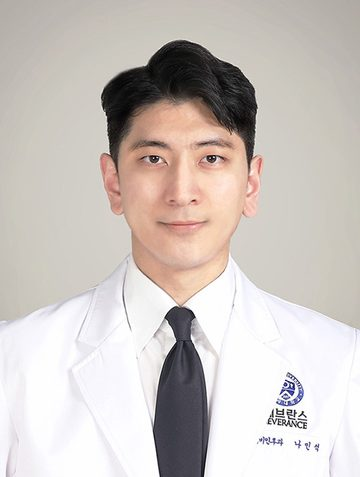
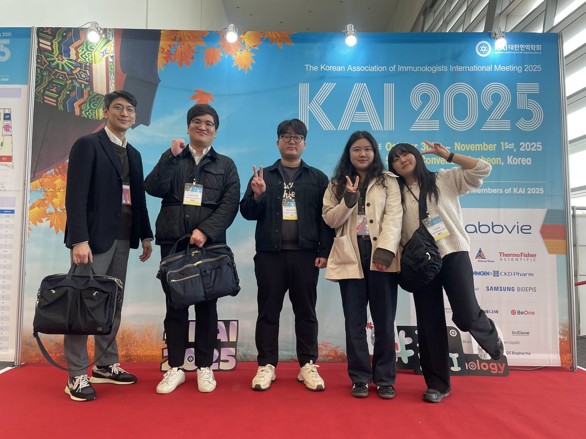
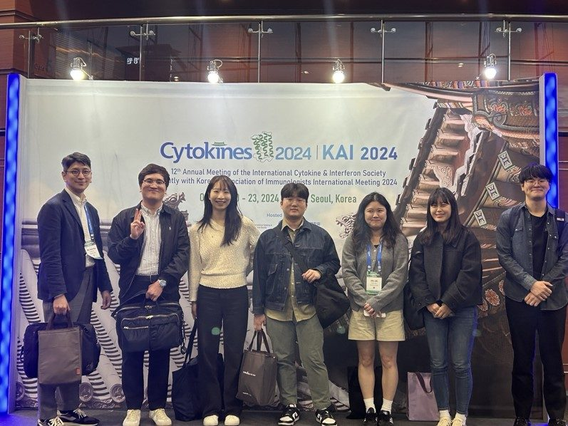

Exploring the mucosal immune system of the upper airway with unprecedented precision for clinical translation
RHA LAB @ Yonsei University/Severance Hospital
Research in Human Airway Mucosal Immunology Lab
연세대학교 의과대학 나민석 교수 연구실
We are always recruiting passionate researchers (postdocs, graduate students, undergraduates, and research associates) to join our lab.
How to apply →RHA Lab explores the complex interplay among immune cells, epithelial cells, tissue stem cells, and microbial communities within the upper airway mucosa. Our research focuses on understanding the mechanisms underlying the persistence of inflammatory memory and the maintenance of tissue immune homeostasis. By integrating immunology, microbiology, tissue stem cell biology, and bioinformatics, we combine studies of human-derived samples with in vivo models to elucidate how mucosal immunity is maintained or reprogrammed at the airway barrier. Ultimately, we aim to translate these mechanistic insights into improved therapeutic strategies for chronic airway diseases and respiratory infections.
People

Min-Seok Rha, MD, PhD
msrha@yuhs.acEducational background & Professional experience
Honors & Awards
Publications
News
Lab life


Contact
Location
RHA Lab is located on the 2nd floor of Avison Biomedical Research Center (ABMRC), Yonsei University College of Medicine, Severance Hospital
50-1, Yonsei-Ro, Seodaemun-gu, Seoul 03722, Republic of Korea
We are recruiting!
We are always recruiting passionate researchers (postdocs, graduate students, undergraduates, and research associates) to join our lab.
Please contact Prof. Min-Seok Rha with the following documents:
- Cover letter describing your scientific interests and strengths
- Curriculum vitae (or Resume)
msrha@yuhs.acThe Airway Mucosa Institute
연세대학교 의과대학 기도점막연구소(이전 명칭: 기도점액연구소)
The Airway Mucosa Institute, Yonsei University College of Medicine